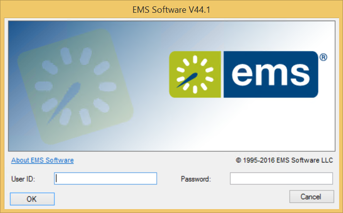
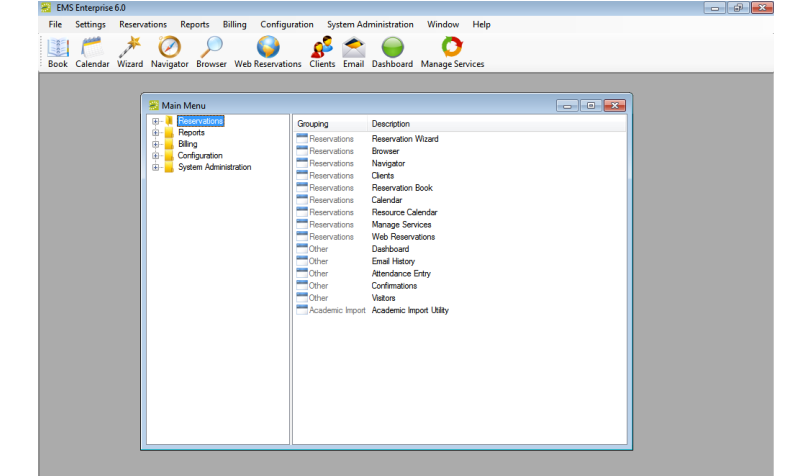
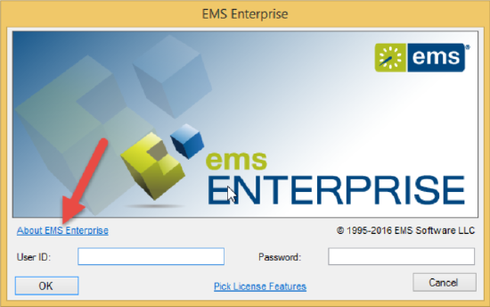
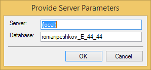

After EMS has been installed on your desktop, a shortcut icon for the application is placed on your desktop. An option for the application is also available from your Start menu. You can double-click the desktop icon to launch the EMS application, or you can select the option from your Start menu.

Note: If you are the first person to log in to the EMS application at your organization, a dialog box opens where you enter the information for the login server and database that your application is accessing. (These are set up during implementation.) After you enter this information, the EMS Login dialog box opens.

Tip: If you have an EMS Enterprise license, you can change the server and database you are connecting to by right-clicking on the About EMS Enterprise option.

This launches a pop-up window where you can choose a different server and database.
